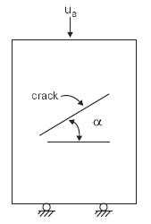
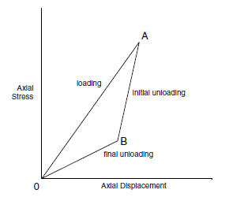
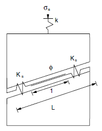
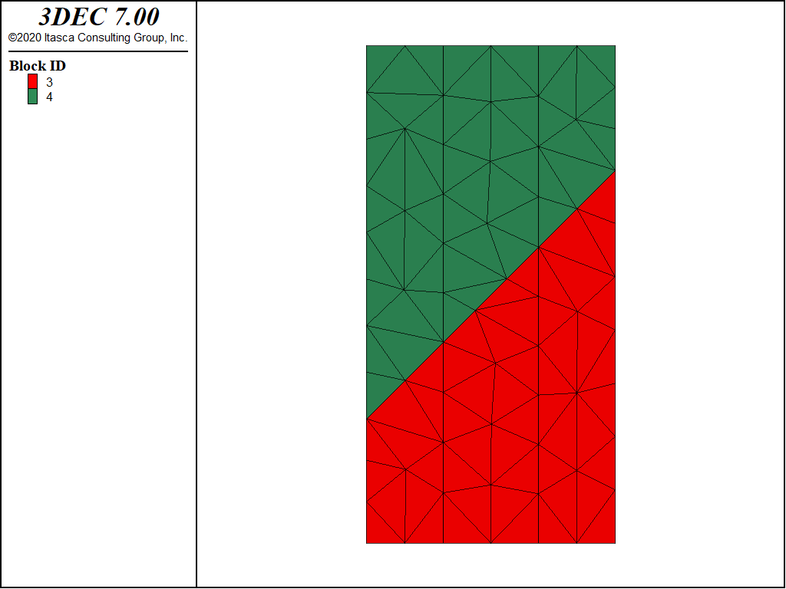
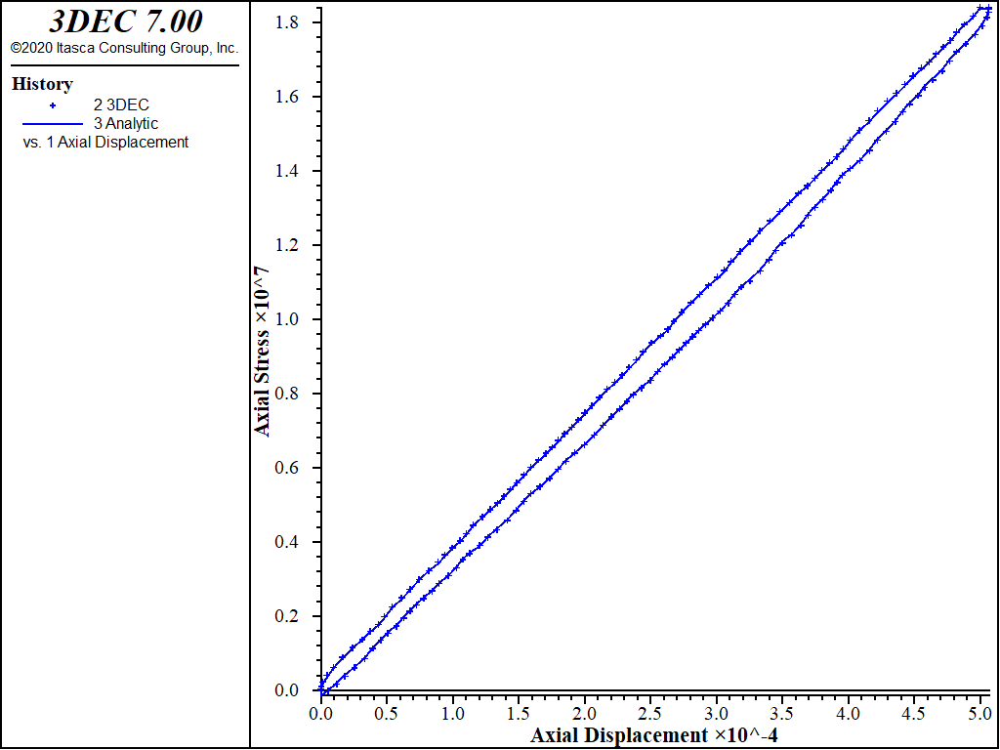

循环加载下含滑动裂隙的块体
问题描述
注意
要在 3DEC 中查看此项目，请使用菜单命令 。选择“3DEC/ VerificationProblems/ Slipping_Crack”，然后选择“slip3d.prj”进行加载。所用的主数据文件（main data files）显示在本示例的末尾。所有数据文件都可在该项目中找到。
本问题涉及承受单轴加载循环的含倾斜内部闭合裂隙的弹性块体。（注：本节是在与核废料管理分析中心（CNWRA）签订的编号 NRC-02-88-005 合同下编写的。）
图 1（Figure 1）所示问题由一个三维块体组成，其中含有一条沿 \(z\) 方向贯穿块体全长的倾斜闭合裂隙。施加在模型顶部的轴向位移逐渐增大，然后减小，直至模型恢复到原始位置。由此产生的荷载使裂隙发生非弹性滑动。加载循环的应力-位移关系如图 2（Figure 2）所示，由三个不同部分组成（Olsson，1982）：
- 加载段（OA），兼具弹性变形和沿裂隙的滑动；
- 初始卸载段（AB），此时裂隙不发生滑动；以及
- 最后一段卸载段（BO），同样包含弹性变形和滑动。

图 1：含嵌入平面裂隙的三维块体。

图 2：含嵌入裂隙的弹性块体在单轴加载循环下的应力-位移关系（见 Olsson，1982）。
为该项评估规定了以下问题条件。一条倾斜裂隙嵌入弹性介质中。该介质的物理属性为：
弹性模量（\(E'\)）：88.9 GPa
泊松比（\(\nu '\)）：0.26
高度（\(H\)）：2 m
宽度（\(W\)）：1 m
长度（\(B\)）1 m
裂隙的属性为：
节理法向刚度（\(K_n\)）：220 GPa /m
节理剪切刚度（\(K_s\)）：220 GPa /m
节理内摩擦角（\(\phi\)）：16°
节理倾角（\(\alpha\)）：45°
裂隙的滑动部分（\(\ell\)）：0.54 m
概念模型
概念模型（由 Brady 等（1985）提出）考虑嵌入弹性固体中单条裂隙的变形响应。为方便起见，在 3DEC 分析中，图 3（Figure 3）所示模型的三维表示具有长度为 \(L\) 的不连续面（其中仅长度为 \(\ell\) 的中间部分允许滑动），\(B\) 为块体的深度，裂隙沿 \(y\) 方向。

图 3：含嵌入裂隙的弹性块体概念模型（见 Brady 等，1985）。
包含贯通不连续面的试件的等效轴向弹性刚度由下式给出
其中 \(W B E' / H\) 为固体的单轴弹性刚度，其余两项分别为节理法向（\(K_n\)）和剪切（\(K_s\)）弹簧刚度的贡献。
三个线段的刚度由下式给出：
式 (1) 中的弹性模量 \(E'\) 和泊松比（\(\nu\)）为平面应力参数；相应的平面应变参数为 \(E\) 和 \(\nu\)。平面应力与平面应变弹性常数之间的关系由下式给出：
以及
应当注意，Brady 等（1985）提出的概念模型假定为平面应力条件。
3DEC 模型
假定
假定裂隙所嵌入的块体材料为线弹性、均质且各向同性。裂隙面与 \(xz\) 平面成 45° 角，并沿 \(z\) 方向贯穿块体。沿 \(z\) 方向的不连续面中间条带允许滑动。通过在这些区域将摩擦阻力设为高值，可阻止不连续面两端发生滑动。
模型几何与网格单元
含平面裂隙的弹性块体采用弹性可变形块体建模，如图 4（Figure 4）所示。除该不连续面之外的所有节理均被“连接”，以模拟连续的弹性介质。每个块体均离散为四面体网格单元。


图 4：含平面裂隙的三维试件块体模型。
节理参数
节理采用标准库仑滑移模型。库仑模型是一种线弹性理想塑性本构关系，与概念模型中推导三个刚度表达式（式 (1) 至 (4)）所用的概念一致。节理属性列于下表（table）中。
| 法向刚度，stiffness-normal | 220 GPa/m |
| 剪切刚度，stiffness-shear | 220 GPa/m |
| Friction, friction | 16^{circ} |
边界条件
- 沿 \(xy\) 平面的底边界固定在 \(y\) = 0 处。
- 通过在 \(z\) 方向限制位移来模拟平面应变条件。具体做法是，在 \(xy\) 平面上 \(z\) = 0 和 \(z\) = 1.0 处将速度边界条件设为零。
- 通过保持四个竖向边界全部自由来模拟平面应力条件。
加载
通过对模型顶部施加速度边界条件，完成了一次完整的单轴压缩加载循环。速度的大小由通过 FISH 函数执行的伺服控制（见“SLIP.FIS”文件（“SLIP.FIS”））。加载与卸载序列同样由 FISH 函数实现和控制。
结果
竖向应力与竖向位移的关系曲线（由解析解得到以及由 3DEC 计算得到）如图 5（Figure 5）和图 6（Figure 6）所示。图 5（Figure 5）将解析解与 3DEC 在平面应变条件下得到的结果进行对比；图 6（Figure 6）将解析解与 3DEC 在平面应力条件下得到的结果进行对比。（使用 FISH 函数计算模型顶部的平均位移和平均应力。解析结果同样使用 FISH 函数计算。）



图 6：平面应力条件——采用库仑摩擦定律模拟含滑动裂隙块体的循环加载问题中，轴向应力与轴向位移的关系。
讨论
这一简单的概念模型抓住了含滑动裂隙弹性体加载循环的基本特征。完整的加载循环伴随三个不同的斜率，分别代表带滑动的加载、无滑动的初始卸载以及带滑动的卸载。在模拟平面应力和平面应变两种条件时可以看出，采用库仑节理模型的 3DEC 分析结果与概念模型吻合良好。
然而可以观察到，随着滑动裂隙长度相对于试件宽度的增大，3DEC 分析结果的一致性变差。这是预期之中的，因为概念模型假定裂隙上和弹性延伸段上的法向应力均匀分布。实际上，随着滑动裂隙长度的增加，应力集中（尤其是节理法向应力）变得更加显著。
参考文献
Brady, B. H. G., M. L. Cramer and R. D. Hart. “Preliminary Analysis of a Loading Test on a Large Basalt Block (Tech. Note),” Int. J. Rock Mech. Min. Sci. & Geomech. Abstr., 22, 345-348 (1985).
Olsson, W. A. “Experiments on a Slipping Crack,” Geophys. Res. Letters, 9(8), 797-800 (1982).
数据文件
slip3d.dat
;==============================================================
; 验证试验——滑移裂纹
;
; 循环荷载下含滑移裂纹块体的 3DEC 建模
; 节理模型：库仑滑移模型
; 弹性块体
;==============================================================
;
;
model new
fish automatic-create off
model large-strain on
fish def params
global W_ = 1.0 ; 宽度
global B_ = 1.0 ; 长度
global H_ = 2.0 ; 高度
global E_ = 88.9e9 ; 杨氏模量，平面应力条件
global poiss_ = 0.26 ; 泊松比，平面应力条件
global alpha_ = 45 ; 节理倾角
global l_ = 0.54 ; 裂纹滑移段长度
global fric_ = 16 ; 节理摩擦角
global jkn_ = 220e9 ; 节理法向刚度
global jks_ = 220e9 ; 节理剪切刚度
global E_planestrain = E_*(1.0+2.0*poiss_)/(1.0+poiss_)^2
global poiss_planestrain = poiss_/(1.0+poiss_)
global crack_xmin = 0.5*W_ - math.cos(alpha_*math.degrad)*0.5*l_
global crack_xmax = 0.5*W_ + math.cos(alpha_*math.degrad)*0.5*l_
global crack_zmin = 0.5*H_ - math.sin(alpha_*math.degrad)*0.5*l_
global crack_zmax = 0.5*H_ + math.sin(alpha_*math.degrad)*0.5*l_
global vel_ ; 初始加载速度
global displim_ ; 位移限值
global unbal_limit = 1000 ; 伺服控制使用的不平衡力限值
end
[params]
;
block create brick 0,[W_] 0,[B_] 0,[H_]
block cut joint-set dip [-alpha_] dip-direction 90 ori 0.0,0.0,0.5
block cut joint-set dip 90 dip-direction 90 ori [crack_xmin],0.0,0.0 join
block cut joint-set dip 90 dip-direction 90 ori [crack_xmax],0.0,0.0 join
block zone generate edgelength 0.2
;
; 裂纹延伸段，无滑移
block zone cmodel elastic
block zone property density 2850 young [E_planestrain] ...
poiss [poiss_planestrain]
block contact jmodel mohr
block contact property stiffness-normal [jkn_] ...
stiffness-shear [jks_] ...
friction 89.0 ...
tension 100
; 裂纹参数
block contact property stiffness-normal [jkn_] stiffness-shear [jkn_] ...
friction [fric_] ...
range pos-x [crack_xmin],[crack_xmax] ...
pos-z [crack_zmin-0.001],[crack_zmax+0.001]
block contact material-table default property stiffness-normal [jkn_] ...
stiffness-shear [jkn_] ...
friction [fric_]
block insitu stress -0.1 -0.1 -0.1 0 0 0
; 建立顶部边界网格点的列表
program call 'slip.fis'
[_boulist]
block mechanical damping global
history interval 100
fish history disp_avg
fish history stress_avg
fish history astress
fish history vel_
model history mechanical unbalanced-maximum
history name '1' label 'Axial Displacement'
history name '2' label '3DEC'
history name '3' label 'Analytic'
;
model save 'slip3d-ini'
;==============================================================
; 验证的第一部分
; 平面应变模拟
;==============================================================
;
; 边界条件
;
block gridpoint apply velocity-z 0 range position-z [H_]
block gridpoint apply velocity-z 0 range position-z 0.0
block gridpoint apply velocity-y 0 range position-y 0.0
block gridpoint apply velocity-y 0 range position-y [B_]
[vel_ = -1e-5]
[displim_ = 5e-4]
; 在输入的计算步数内加载
[_load(100)]
; 卸载
[vel_ = 1e-6]
[displim_ = 0]
[_load(100)]
;
model save 'slip3d-planestrain'
;==============================================================
; 验证的第二部分
; 平面应力模拟
;==============================================================
;
model restore 'slip3d-ini'
block zone property young [E_] poiss [poiss_]
;
;
; 边界条件
;
block gridpoint apply velocity-z 0 range position-z [H_]
block gridpoint apply velocity-z 0 range position-z 0.0
;
[vel_ = -1e-5]
[displim_ = 5e-4]
; 在输入的计算步数内加载
[_load(100)]
; 卸载
[vel_ = 1e-6]
[displim_ = 0]
[_load(100)]
;
model save 'slip3d-planestress'
;
program return
slip.fis
;==================================================
;
; 推导模量的解析解
;
;==================================================
fish def _analytic
local cos_al_ = math.cos(alpha_*math.degrad)
local sin_al_ = math.sin(alpha_*math.degrad)
local Length_ = W_/cos_al_
local invk_ = H_/(W_*B_*E_)+cos_al_*cos_al_/(jkn_*Length_*B_)
invk_ = invk_+sin_al_*sin_al_/(jks_*Length_*B_)
local k_ = 1./invk_
global slopeAB_ = k_
local den_ = jks_*B_*(Length_-l_)*math.cos(fric_*math.degrad)
local den1_ = k_*sin_al_*math.sin((alpha_-fric_)*math.degrad)/den_
local den2_ = k_*sin_al_*math.sin((alpha_+fric_)*math.degrad)/den_
global slopeOA_ = k_/(1.+den1_)
global slopeBO_ = k_/(1.+den2_)
global dispmax_ = 0.0
end
[_analytic]
;==================================================
;
; 建立边界网格点列表，在这些点上
; 施加荷载
;
;==================================================
fish def _boulist
global points = map
loop foreach local igp_ block.gp.list
local z_ = block.gp.pos.z(igp_)
if math.abs(H_-z_) < 0.01*H_ then
points(map.size(points)) = igp_ ; 存入映射，采用任意的唯一索引
end_if
end_loop
end
;
;=======================================================
;
; 计算模型顶部的平均应力和位移，
; 并计算应力与位移之间的
; 解析关系
;
;=======================================================
fish def stress_avg
local xc_ = 0.5*W_
local yc_ = 0.5*B_
local zc_ = H_
local igp_ = block.gp.near(xc_,yc_,zc_)
global disp_avg = -block.gp.disp.z(igp_)
if vel_ < 0. then
global astress = slopeOA_*disp_avg
else
local ua_ = dispmax_
local ub_ = dispmax_*(slopeOA_-slopeAB_)/(slopeBO_-slopeAB_)
if disp_avg > ub_ then
astress = dispmax_*slopeOA_ - (dispmax_-disp_avg)*slopeAB_
else
astress = disp_avg*slopeBO_
end_if
end_if
local stress_ = 0.0
loop foreach local gp points
stress_ = stress_ - block.gp.force.reaction.z(gp)
end_loop
stress_avg = stress_/(W_*B_)
; loop foreach local zp block.zone.list
; stress_ = stress_ - block.zone.stress.zz(zp)
; end_loop
; stress_avg = stress_ / float(block.numzone)
end
;
;==================================================
;
; 用于控制计算循环的函数
;
;==================================================
fish def _load(nstep_)
local sign_ = vel_/math.abs(vel_)
loop while 1 > 0
command
model cycle [nstep_]
end_command
if sign_*disp_avg < sign_*displim_
dispmax_ = disp_avg
exit
end_if
end_loop
end
;==================================================
;
; 控制模型加载的伺服
; 机制
;
;==================================================
fish def _servo
while_stepping
if block.unbal > unbal_limit then
vel_ = 0.98*vel_
loop foreach local gp points
block.gp.vel.app.z(gp) = vel_
end_loop
endif
if block.unbal < 0.8*unbal_limit then
vel_ = 1.02*vel_
loop foreach gp points
block.gp.vel.app.z(gp) = vel_
end_loop
endif
end
| 这些内容对您有帮助吗？… | FLAC3D © 2019, Itasca | 原文更新于 2020 年 10 月 8 日 |